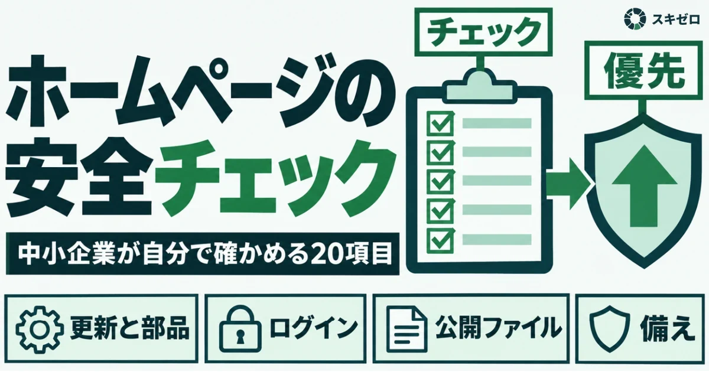
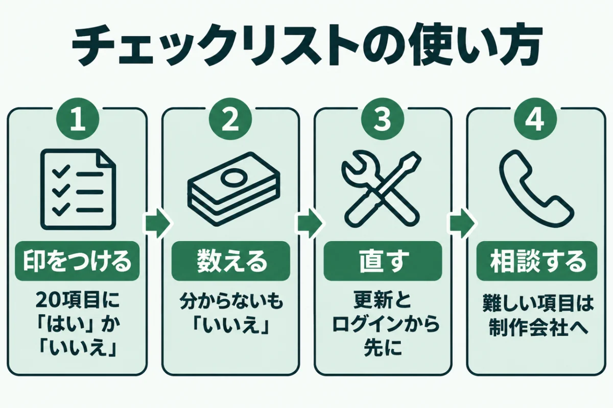
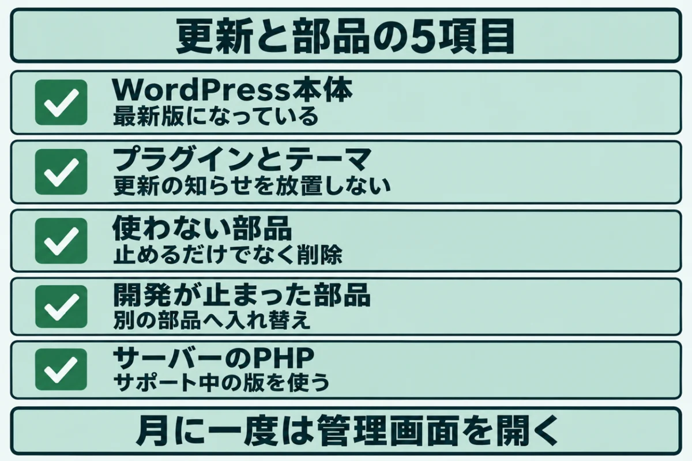
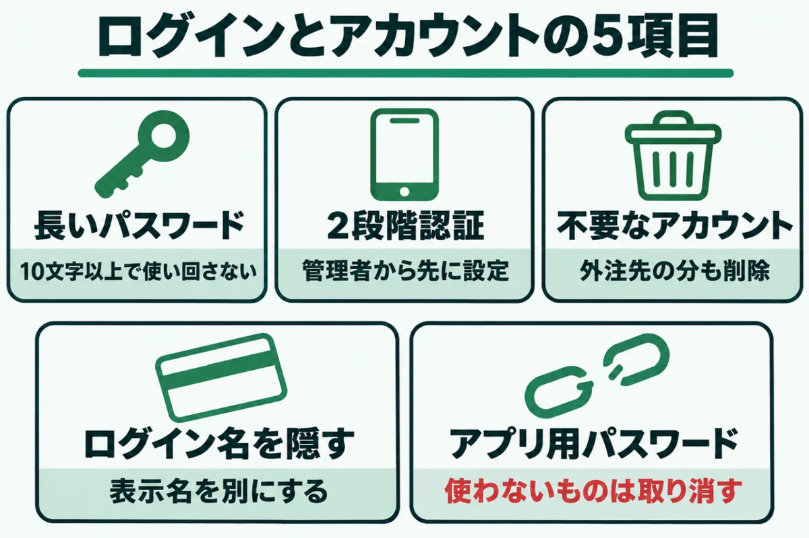
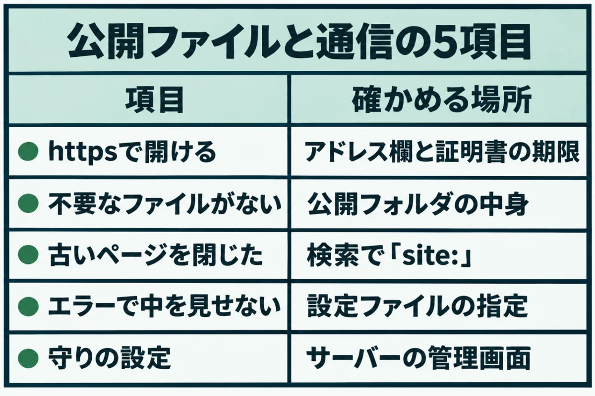
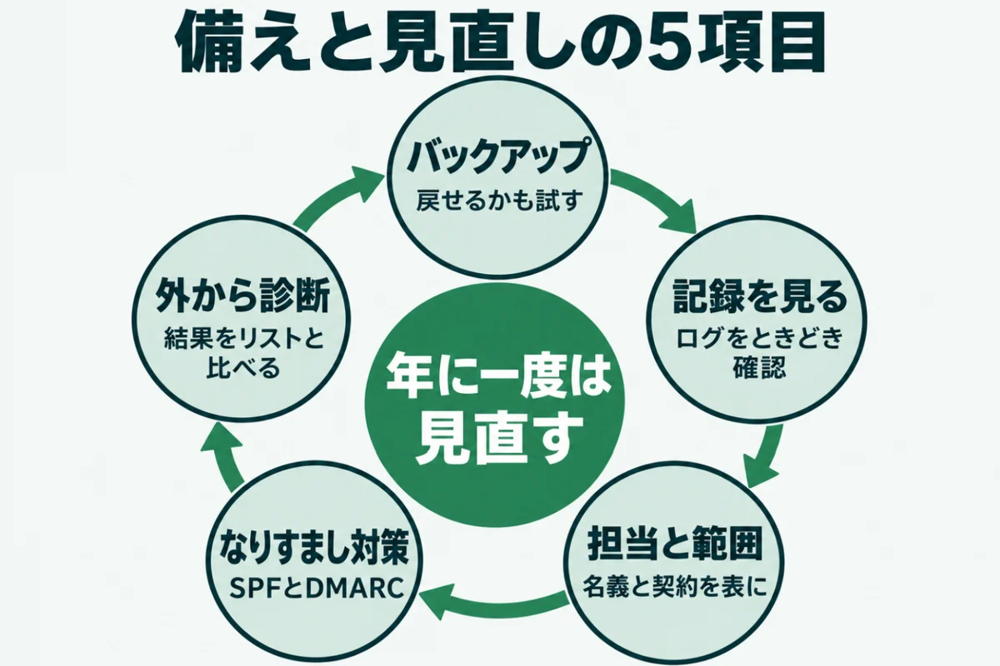

ホームページのセキュリティチェックリスト中小企業が自分で確かめる20項目

「自社のホームページの安全は、何から確かめればよいのか分からない」と困っていませんか？
制作会社に任せたまま何年もたつと、どこが古くなっているのかが見えにくくなります。担当者がほかの仕事と兼ねている会社なら、なおさらでしょう。
この記事では、中小企業が自分で確かめられる20項目をチェックリストにまとめました。更新、ログイン、公開しているもの、備えの4つに分けて紹介します。
項目は、IPAの「安全なウェブサイトの運用管理に向けての20ヶ条」などの公開資料に沿って選びました。印をつけながら読み進めてください。
ホームページのセキュリティチェックリストの使い方

このチェックリストは、1項目ずつ「はい」か「いいえ」で答える形です。20項目は、更新、ログイン、公開ファイルと通信、備えの4つのまとまりに分かれています。
答えが分からない項目は、「いいえ」として数えましょう。IPAの「5分でできる！情報セキュリティ自社診断」も、同じ考え方です。「わからない」は、「実施していない」の0点より低いマイナス1点として扱われています。
WordPressの管理画面で見る項目と、サーバーの管理画面や契約書で見る項目の2種類です。「いいえ」が付いたら、更新とログインのまとまりから先に直してください。どちらも、外から直接ねらわれる入口に関わる項目だからです。
ホームページのセキュリティチェックリスト（更新と部品の5項目）

最初のまとまりは、サイトを動かす部品が古いままになっていないかを見る項目です。WordPress本体やプラグイン、サーバーのPHPがこれに当たります。
IPAの20ヶ条でも、ソフトウェアの脆弱性対策を定期的にすることが挙げられました。弱点が知られた古い部品は、それだけで攻撃の入口になるのです。1つずつ見ていきましょう。
① WordPress本体が最新版になっている
管理画面の「ダッシュボード」から「更新」を開くと、今の版が分かります。2026年11月24日時点の最新版は、11月18日に公開された7.1.5です。この版にはいくつものセキュリティの修正が入り、公式はすぐに更新するよう勧めました。古い版のままなら、知られた弱点が残っている状態です。版は、外からでも確かめられます。WordPressのバージョンを確認する方法（管理画面と外からの両方）を見てください。
② プラグインとテーマが最新版になっている
プラグインは、「プラグイン」の一覧で更新の知らせが出ているかを見ます。テーマは、「外観」の「テーマ」の画面で確かめてください。プラグインとテーマの自動更新は、WordPress 5.5から1つずつ選んで有効にする仕組みです。自分で有効にしない限り、更新は手動のままになります。知らせを放っておくと、修正版が出ていても古いまま残るでしょう。予約や決済の機能を持つプラグインは、更新のあとに動きも確かめます。
③ 使っていないプラグインとテーマを消している
停止しているだけのプラグインも、ファイルはサーバーに残ったままです。使っていないテーマも同じ扱いになります。運営者の自社サイトの点検でも、配布が止まったプラグインが残っていました。使う予定のないものは、止めるだけでなく削除しましょう。ただし、表示に使っている子テーマの親のテーマは消さないでください。消してよいかの見分け方は、WordPressの使っていないプラグインは削除すべき？判断の基準と安全な消し方にまとめています。
④ 開発が止まった部品を使っていない
開発が終わったプラグインやテーマには、弱点が見つかっても修正が届きません。自動更新を有効にしていても、古い版のまま残ります。WordPress.orgの配布ページで、最終更新の日付を確かめてください。何年も更新がない部品は、同じ働きをする別の部品への入れ替えを考えましょう。有料のテーマやプラグインは、作った会社のサイトで更新が続いているかを見ます。制作会社が独自に作った部品は、誰が直すのかを先に聞いておくと安心です。
⑤ サーバーのPHPがサポート中の版になっている
PHPは、WordPressを動かす土台のプログラムです。php.netの一覧では、8.3は2027年末まで修正が出ます。一方で、PHP 8.2のサポートは2026年12月31日で終わる予定です。8.1以前には、すでに修正が出ていません。運営者の自社サイトでも、8.3に上げたら管理画面にエラーが出ました。古いプラグインを入れ替えて解消しています。詳しくはPHPのサポート終了とは？放置の危険と確認・更新の手順｜8.2は2026年末で終了を見てください。
ホームページのセキュリティチェックリスト（ログインとアカウントの5項目）

管理画面に入られると、ページの書き換えや不正なファイルの設置ができてしまいます。2つ目のまとまりは、ログインの入口と、入れる人の一覧を見直す項目です。
IPAの20ヶ条でも、不正ログインの対策や不要なアカウントの整理が挙げられました。どれも、管理画面の「ユーザー」の画面から確かめられます。順に見ていきましょう。
① 長く推測されにくいパスワードを使っている
IPAの自社診断は、パスワードを「長く」「複雑に」「使い回さない」ことを求めています。対策の例は、10文字以上で、大文字と小文字、数字、記号を混ぜる形です。名前や電話番号、誕生日は使わないでください。ほかのサービスから漏れたIDとパスワードが悪用される被害も、増えているといいます。管理画面のパスワードは、ほかと使い回さないのが基本です。覚えきれないときは、パスワードの管理ソフトを使うと楽になります。
② 管理画面のログインに2段階認証を入れている
パスワードだけのログインは、パスワードが漏れた時点で入られてしまいます。2段階認証は、スマートフォンのアプリに出る数字などをもう1つ求める仕組みです。IPAも、重要なシステムでは多要素認証などの強化機能を使うよう勧めています。管理者の権限を持つ人から先に設定するとよいでしょう。WordPressでは、2段階認証のプラグインを入れて設定します。設定の前に、締め出されたときの戻し方も決めておいてください。
③ 使っていないアカウントを消している
「ユーザー」の一覧を開き、今も使っている人だけが残っているかを見てください。IPAの20ヶ条は、最低限必要なものを除いて削除するよう求めています。運営者の自社サイトの点検でも、数年前の外注先の編集者アカウントが2つ残っていました。制作のときに作った仮のアカウントも、見落としやすいものです。消す前に、そのアカウントが書いた記事を誰に引き継ぐかを決めましょう。退職や契約の終了のたびに見直すと、残りにくくなります。
④ ログイン名が外から見えないようにしている
WordPressは、作りによってログイン名が外から見えてしまうことがあります。投稿者のページのアドレスやRSSに、ログイン名がそのまま出る場合です。運営者の自社サイトでも、表示名がログイン名のままRSSに出ていました。ログイン名が分かると、あとはパスワードを当てるだけになります。表示名はログイン名と別のものに変えておくと安心です。「ユーザー」の「プロフィール」で、ブログ上の表示名を選び直せます。
⑤ 使わないアプリケーションパスワードを消している
アプリケーションパスワードは、外部のサービスからWordPressにつなぐための合言葉です。ふだんのパスワードとは別に、ユーザーごとに作れます。運営者の自社サイトの点検でも、使わなくなったアプリケーションパスワードが残っていました。連携をやめたら、合言葉も一緒に消すことを忘れないでください。「プロフィール」の画面の下のほうに一覧があり、最後に使った日も見られます。心当たりのないものは、取り消しておきましょう。
ホームページのセキュリティチェックリスト（公開ファイルと通信の5項目）

IPAの20ヶ条の1番目は、「公開すべきでないファイルを公開していませんか？」という問いです。3つ目のまとまりでは、外から誰でも見られるものを確かめます。
IPAの自社診断にも、ウェブサイトの対策の例が並んでいました。HTTPSへの対応、公開ファイルの中身、不要になったページの閉鎖などです。サーバーの中のファイルは目に入りにくいので、意識して見に行きましょう。
① すべてのページがhttpsで開ける
アドレスが「https」で始まると、通信が暗号化されます。IPAの自社診断も、自社のサイトがHTTPSに対応しているかの確認を挙げました。トップページだけでなく、問い合わせフォームのページも開いてみてください。証明書には期限があり、切れると警告の画面が出ます。運営者の自社サイトを外から点検したときは、証明書の残りが33日と出ていました。証明書が自動で更新される設定かも、サーバーの管理画面で見ておきましょう。
② 公開すべきでないファイルを置いていない
サーバーの公開フォルダには、作業の名残が残ることがあります。たとえば、サイトの丸ごとの控え、設定ファイルの写し、データベースの書き出しなどです。こうしたファイルは、アドレスが分かれば誰でも取り出せてしまいます。IPAの自社診断も、公開ファイルに個人情報などが含まれていないかの確認を求めました。控えは公開フォルダの外か、手元に置くのが安全です。サーバーの引っ越しや作り直しのあとは、特に見直してください。
③ 不要になったページや古いサイトを閉じている
期間限定のキャンペーンのページや、作り直す前の古いサイトが残っていませんか？IPAの20ヶ条は、不要になったページやサイトを公開しないよう求めています。古いサイトは更新が止まりやすく、弱点が残ったままになりがちです。検索で自社のドメインを調べると、忘れていたページが見つかることがあります。Googleの検索窓に「site:」と自社のドメインを続けて入れてみましょう。テスト用に作った別のサイトも、使い終わったら閉じてください。
④ エラーの画面で中の情報を見せていない
エラーの画面には、ファイルの置き場所などサイトの中の情報が出ることがあります。IPAの20ヶ条は、こうした情報が攻撃に悪用されると注意を促しました。WordPressでは、不具合を調べるための「WP_DEBUG」という設定がこれに当たります。公式の案内では、本番のサイトで使うことは勧められていません。制作のときに有効にしたまま、戻し忘れることがあるのです。設定ファイルの中身を、制作会社に確かめてもらうと確実でしょう。
⑤ 守りの設定を入れている
サーバーには、怪しい通信を止めるWAFという機能を備えたものがあります。IPAの20ヶ条も、不正な通信を検知または遮断する対策を挙げました。運営者のサーバーでも、最初からあるドメインのWAFが6つの項目ともオフでした。あるのに使っていない機能がないかを、管理画面で確かめましょう。ブラウザーに守り方を伝える設定については、セキュリティヘッダーとは？ホームページに入れたい6つの設定｜確かめ方と入れるときの注意で紹介しています。
ホームページのセキュリティチェックリスト（備えと見直しの5項目）

最後のまとまりは、何か起きたときに困らないための備えです。どれだけ守っても、被害の可能性はゼロにはなりません。
IPAの自社診断も、バックアップや事故に備えた手順づくりを求めています。ふだんは目立たない項目ばかりですが、いざというときの差になるでしょう。年に一度は、この5つをまとめて見直してください。
① バックアップがあり、戻せることを確かめている
IPAの自社診断は、定期的なバックアップに加えて、戻せるかの確認も挙げています。エックスサーバーの自動バックアップは14日分で、一部の古いサーバーは7日分です。運営者の自社サイトのサーバーでは、Webデータは7日分、データベースは14日分でした。改ざんに気づくのが遅れると、控えも汚れているおそれがあります。サーバーの控えとは別に、月に一度は手元にも保存しておきましょう。戻す手順も、一度は試しておくと安心です。
② 記録（ログ）を残し、ときどき見ている
IPAの20ヶ条は、ウェブサーバーのログを保管して定期的に確かめるよう求めています。ログは、いつどのページにアクセスがあったかの記録です。被害に気づいたとき、いつから起きていたのかを調べる手がかりになります。多くのサーバーでは、管理画面からアクセスの記録を取り出せるはずです。保存される期間を、先に確かめておきましょう。ログインの記録を残すプラグインを入れると、見覚えのないログインにも気づきやすくなります。
③ サーバーとドメインの担当と範囲を把握している
IPAの20ヶ条は、外部のサービスを使うときに事業者の作業範囲を把握するよう求めました。サーバー会社が守るのは、多くの場合サーバーの土台までです。WordPressやプラグインの更新は、契約者の側の仕事になります。誰が何を担当しているかを1枚の表にすると、抜けが見えてくるでしょう。サーバーとドメインの名義、更新の期限、保守契約の範囲を書き出してください。制作会社と連絡が取れなくなったときにも、この表が役に立ちます。
④ なりすましメールの対策を入れている
自社のドメインを名乗った偽のメールは、ホームページとは別の入口から取引先を狙います。これを防ぐのが、SPFとDMARCという設定です。どちらも、ドメインの管理画面で文字列を書き足して入れます。SPFは、自社のメールを送ってよいサーバーを宣言する仕組みです。DMARCは、確かめに失敗したメールの扱い方を受け取る側に伝えます。メールを送らないドメインにも設定できるので、使っていないドメインも見直しましょう。
⑤ 定期的に外から診断している
IPAの20ヶ条の最後の項目は、定期的なセキュリティ検査（診断）です。外部による診断は、対策の漏れを洗い出す手段として紹介されています。自分で確かめた結果と、外から見た結果は違うことがあるのです。設定を変えたつもりでも、外からは古い版が見えている場合があります。少なくとも年に一度は、外から確かめましょう。サイトを作り直したときや、制作会社を替えたときも診断のよい機会になります。結果は、このリストと見比べましょう。
URLを入れるだけで、WordPress本体やPHPの版、ログイン名の見え方など8項目を無料で判定します。登録はいりません。
無料で診断するホームページのセキュリティチェックリストに関するよくある質問
20項目すべてに「はい」と答えられないと危ないですか？
すべてが「はい」でなくても、すぐに被害が出るとは限りません。ただし、「いいえ」の数だけ入口が開いていると考えてください。まずは更新とログインのまとまりの「いいえ」を減らしましょう。この2つは、管理画面だけで直せる項目が多いからです。残りの項目は、制作会社やサーバー会社と相談しながら進めるとよいでしょう。
どのくらいの間隔でチェックすればよいですか？
更新のまとまりは、月に一度は見てください。弱点の修正は、数週間おきに出ることがあるからです。ログインやアカウント、備えのまとまりは、年に一度まとめて見直せば足りるでしょう。担当者が替わったときや、外注先との契約が終わったときも見直す機会です。カレンダーに予定を入れておくと、見直しを忘れにくくなります。
制作会社に保守を頼んでいても、自社で確かめる必要はありますか？
保守の契約に何が入っているかによります。更新は入っていても、アカウントの整理やバックアップの確認は入っていない場合があるのです。このチェックリストを制作会社に渡し、担当している項目に印をつけてもらいましょう。印のない項目が、自社で見る範囲になります。サーバーやドメインの名義の項目は、自社でしか確かめられません。
WordPressではないホームページでも使えますか？
多くの項目は、そのまま使えます。httpsやバックアップ、なりすましメールの対策は、作り方に関係ありません。WordPress本体やプラグインの項目は、使っている仕組みの更新に読み替えてください。作成サービスを使っている場合は、更新はサービスの会社が担うことが多いでしょう。その場合も、ログインと名義の項目は自社で確かめます。
専門の知識がなくても確かめられますか？
管理画面で確かめる項目は、画面の場所が分かれば見られます。サーバーの中のファイルや設定ファイルは、少し知識が要るでしょう。外から分かる項目は、スキゼロの無料簡易診断でも確かめられます。証明書、PHP、本体、プラグイン、ログイン名など8項目です。分からなかった項目は、制作会社やサーバー会社に聞いてみてください。
まとめ
ホームページのセキュリティチェックリストは、4つのまとまりに分けた20項目です。分からない項目は「いいえ」として数え、更新とログインから先に直しましょう。
一度確かめて終わりにせず、更新は月に一度、全体は年に一度見直すことが大切です。外から分かる項目は、診断であわせて確かめてください。
まずは、今の状態を知るところから。
URLを入れるだけで、数十秒で判定が出ます。登録はいりません。